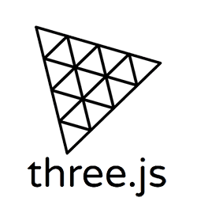
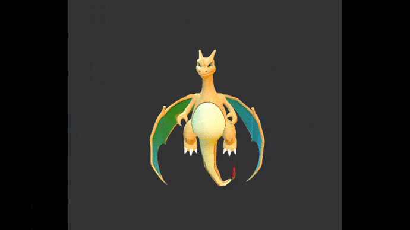
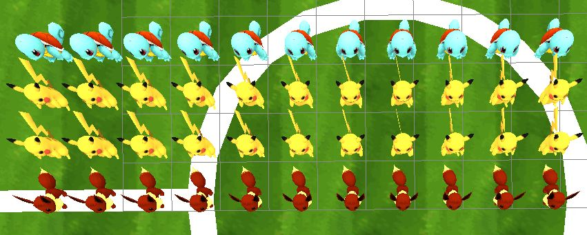

Projet SIA 2021 - Space Invaders
TISON FlorianPrésentation
Il nous a été demandé, dans le cadre de l'UE Synthèse d'image avancé, de réaliser un clone du jeu emblématique Space Invader tournant sur un navigateur. J'ai choisis, pour la réalisation de ce projet, de faire un Space Invader sur le thème du jeu vidéo Pokémon.
Dans le but de pouvoir récupérer les différents modèles du jeu, musiques et interfaces utilisateur, le jeu à besoin d'un serveur web.
Le jeu est accessible en suivant ce lien.
Déroulement du jeu
Le jeu reprend la base d'un Space Invader classique. Le joueur commence la partie avec 3 vies (configurable dans le fichier global.js) et son objectif est de tirer sur les ennemis qui se déplacent devant lui. Ils lui rapporte des points lorsqu'ils sont éliminés. Une fois tout les ennemis éliminés, le joueur passe au niveau suivant. Pour rendre la tâche du joueur moins facile, les ennemis lui tirent dessus et essaient eux aussi de l'éliminer. Pour se défendre des structures sont positionnées devant le joueur. Ces structures peuvent être détruite par les ennemis mais également par le joueur. Un boss, rapportant plus de points, se déplace de temps à autre au dessus des ennemis et tire sur le joueur. Il n'est pas nécessaire de tuer le boss pour pouvoir passer au niveau suivant. Une fois que le joueur à perdu toute ses vies ou qu'il a terminé tous les niveaux, le partie s'arrête et affiche au joueurs ses résultats. Cependant quelques ajouts ont été effectués. Parmi ces ajouts on a : - Certains ennemis qui ont plusieurs vies, - La possibilité pour que n'importe quel ennemi lâche un objet bonus à destination du joueur, - Le gain d'une vie à chaque passage de niveau. De plus, chaque niveau est indépendant, causant aux ennemis de rapporter plus au moins de points suivant les niveaux. En effet, un même ennemi pourra, par exemple, rapporter 10 points au niveau 1 et 20 points au niveau 2.
En accord avec le cahier des charges proposé, le jeu comporte un écran titre récapitulant les points donnés par chaque ennemis suivant le niveau ainsi qu'un bouton permettant de lancer la partie. On retrouve également sur cet écran le meilleur score enregistré lorsqu'une partie a déjà été jouée auparavant.
Le jeu se compose de quatre niveaux différents. Le premier niveau est basé sur le placement des ennemis du jeu Space Invader Original. On retrouve donc :
- 1 Lignes d'ennemis faibles
- 2 Lignes d'ennemis moyens
- 1 Lignes d'ennemis forts
Le niveau 3 et 4 comportent un placement personnalisé dessinant un pixel art de Pokémons. Ces niveaux ont pour but de montrer les possibilités de placement du système développé détaillé dans la partie "Les petits plus".
Technologies logicielle
Le jeu est construit autour de la librairie Javascript "ThreeJs". Cette librairie permet de créer des scènes 3D dans un navigateur internet. La librairie "ThreeX.keystate" est également présente. Cette librairie à pour but de gérer les évènements au clavier.
Ce projet, repose sur le système de classe et de module introduit dans la spécification Javascript ECMAScript 6. Ainsi que sur un système évènementiel inspiré de la class EventEmitter du runtime Javascript NodeJS. Ce système évènementiel est tiré d'une discussion GitHub trouvable ici, et a ensuite été légèrement agrémenté par mes soins. L'avantage d'un tel système est l'indépendance des modules entre eux. Ainsi une class coordinatrice gère l'ensemble de la partie et ses évènements.
Au niveau du développement la librairie Stat.js a été utilisée pour afficher les performances du jeu. 
Architecture logicielle
Le projet reprend l'architecture de base proposée dans le sujet en structurant les fichiers Javascript dans des dossiers décrivant leurs fonctionnalités. Un dossier html a été ajouté pour contenir les différentes interfaces graphiques du jeu et un dossier levels pour contenir les différents fichiers de configuration des niveaux (détaillé plus bas dans le rapport).
Graphisme
Lorsque qu'un ennemi ou un bouclier prend des dégâts, sa texture change (au niveau de la couleur). Les modèles du jeux sont tirés du jeu vidéo Pokémon. On retrouve une arène de combat pour la zone de jeu ainsi que plusieurs Pokémons interprétant les ennemis. Certains niveaux sans modèles prennent quand à eux la forme d'un Pokémon. De plus, tout les modèles de Pokémons possèdent une légère animation qui leur est unique. Lors d'un déplacement, le joueur se tourne vers sa direction de déplacement et lance une animation de course. En plus d'une animation de repos lorsque le joueur ne bouge pas, une animation cachée à été rajoutée lorsque le joueur ne bouge pas pendant un petit moment. Un effet de postprocessing a également été implémenté. Celui-ci, donne un effet pixélisé au jeu rappelant les anciennes versions de Pokémon ainsi que le jeu Space Invader originel.
Un exemple d'animation réalisée sous Blender et implémentée dans le jeu est visualisable ci-dessous : 
Dialogues avec l'utilisateur
Un message est affiché lors de la transition entre les niveaux. Ce message affiche le nom du niveau et son numéro. Lors de l'arrivée sur le niveau suivant, une attente d'une seconde est lancée pour laisser au joueur le temps d'observer le niveau.
Plusieurs raccourcis sont disponibles afin d'offrir une meilleure expérience utilisateur.
- La touche "H" permet d'afficher tous les raccourcis disponibles,
- La touche "B" permet d'afficher les zones de collision, pour aider au développement,
- La touche "S" permet d'afficher les squelettes des modèles, pour aider au développement,
- La touche "M" permet de couper la musique ou bien de la remettre,
- La touche "P" permet de mettre le jeu en pause ou de l'enlever,
- La touche "T" permet d'activer l'effet de pixellisation.
Caméras
Le jeu dispose de différents points de vue :
- Une vue de dessus (comme le jeu original)
- Une vue mouvante (qui suit les mouvements du joueur)
- Une vue de derrière le joueur permettant de visualiser l'effet 3D du jeu
- Une vue de côté positionnée au niveau des gradins.
Gestion des collisions
Les collisions sont gérées par le biais de groupe de collision au niveau des éléments du jeu. Ainsi chaque élément du jeu reçoit un groupe d'éléments avec lequel il peut entrer en collision. Lors d'une mise à jour, un élément parcourt son groupe de collision et construit une Box3 autour de lui et des éléments du groupe. Lorsque les Box3 se superpose, alors on a une collision.
A titre d'exemple, l'extrait de code ci-dessous, montre la mise en place des collision entre les envahisseurs et le joueur.
getBoundingBox() {
return new THREE.Box3().setFromObject(this);
}
/**
* Detecte si un invader rentre en collision avec le defender
*/
isCollidingDefender() {
let defender = this.target;
if(defender) return this.getBoundingBox().intersectsBox(defender.getBoundingBox());
return false;
}
L'image ci-dessous montre un exemple de zone de collision générée.

Dynamisme
Pour rendre le jeu plus palpitant, la difficulté du jeu augmente au fil des niveaux et au cours des niveaux en eux-même. Entre le début et la fin d'un niveau, on retrouve donc une augmentation de :
- la vitesse de déplacement des ennemis,
- la vitesse des projectiles tirés par les ennemis,
- la précision des tirs ennemis,
- le probabilité de tir des ennemis.
Intelligence artificielle
Pour gérer la précision des ennemis, une pseudo intelligence artificielle a été développée. Celle-ci se base sur la distance en X des ennemis par rapport au joueur. Ainsi plus l'ennemi sera précis et plus il tirera quand il sera proche du joueur. Un ennemi imprécis est donc un ennemi pouvant tirer peut importe la distance avec le joueur.
L'extrait de code ci-dessous décrit la séquence de tire d'un envahisseur.
function distanceX(v1, v2) {
var dx = v1.x - v2.x;
return Math.sqrt(dx*dx);
}
/**
* Définie si un invader peut tirer ou non
* @returns { Boolean }
*/
canShoot() {
let currentObjectPosition = new THREE.Vector3();
this.getWorldPosition(currentObjectPosition);
return distanceX(currentObjectPosition, this.target.position) <= (100 - this.accuracy) / 100 * (this.boardSize / 2) + 1 && this.shootDelayEnded;
}
if(this.canShoot()) {
// l'invader peut tirer et décide donc de tirer ou non
if(Math.random() < this.probToShoot) this.shoot();
}
Musique et son
Le jeu dispose d'une musique de fond désactivable. Cette musique est un remix à la sauce Pokémon du thème de Jotaro dans l'anime Jojo's Bizarre Adventure. Plusieurs sons sont également présents. Nous avons donc un son au clique sur un bouton des menus du jeu, un son lors d'un tire du joueur et un son lors de la mort d'un ennemi. Une musique est également déclenchée lorsque le joueur arrive à terminer le jeu.
Triches
Plusieurs touches de triches sont disponibles pour rendre l'évaluation plus simple pour vous. Il y donc la touche I pour se rendre invincible vis à vis des projectiles des ennemis. Le statue du mode invincible peut être visualisé en haut à gauche de la page. La touche K permet de passer au niveau suivant. Cependant aucun point ne sera gagné.
Les petits plus
Création de niveaux
Le gros ajout sur ma version du jeu est la modularité et la configuration libre des niveaux. En effet, tout les niveaux du jeu sont enregistrés dans des fichiers JSON présent dans le dossier src/levels. Il est donc possible, dans ces fichiers, de choisir le mode de placement des envahisseurs suivant deux modes :
- Grid : les envahisseurs se disposent en rectangle (comme dans le jeu originel)
- Custom : les envahisseurs se disposent suivant la configuration inscrite dans le fichier
De plus, il est très facile d'ajouter un niveau car il suffit seulement d'ajouter un fichier JSON de niveau dans le dossier /src/levels avec le nom level-{id}.json et celui-ci sera automatiquement jouable, à condition que la configuration soit bonne.
Configuration générale du niveau :
| Données | Description des données |
|---|---|
| name |
Type : String
Description : Le nom du niveau apparaissant au moment du changement de niveau et dans le titre de la page. |
| id |
Type : Integer
Description : Le numéro du niveau apparaissant lors de la transition. |
| turnBeforeDeath |
Type : Integer
Description : Le nombre de tour minimum avant que les envahisseurs n'atteigne le joueur. |
| invaders |
Type : Invaders
Description : La configuration des envahisseurs. |
| defender |
Type : Defender
Description : La configuration des envahisseurs. |
| shields |
Type : Shields
Description : La configuration des boucliers. |
| Boss |
Type : Boss
Description : La configuration du boss du niveau. |
Type Invaders :
| Données | Description des données |
|---|---|
| timeBetweenMoveSpeedIncreasing |
Type : Number
Description : Temps (en milliseconde) nécessaire entre les augmentations de vitesse de déplacement des envahisseurs. |
| timeBetweenProjectilesSpeedIncreasing |
Type : Number
Description : Temps (en milliseconde) nécessaire entre les augmentations de vitesse des projectiles des envahisseurs. |
| timeBetweenAccuracyIncreasing |
Type : Number
Description : Temps (en milliseconde) nécessaire entre les augmentations de précision des envahisseurs. |
| timeBetweenShootProbIncreasing |
Type : Number
Description : Temps (en milliseconde) nécessaire entre les augmentations de probabilité de tire des envahisseurs. |
| projectilesSpeedIncreasingValue |
Type : Number
Description : Valeur à ajouter à la vitesse précédente des projectiles lors de l'augmentation. |
| moveSpeedIncreasingValue |
Type : Number
Description : Valeur à ajouter à la vitesse précédente de déplacement lors de l'augmentation. |
| accuracyIncreasingValue |
Type : Number
Description : Valeur à ajouter à la précision précédente lors de l'augmentation. |
| shootProbIncreasingValue |
Type : Number
Description : Valeur à ajouter à la probabilité de tire précédente lors de l'augmentation. |
| speed |
Type : Object {
x: Value
}
Description : Vitesse de déplacement horizontale initiale du groupe d'envahisseurs. |
| placement |
Type : Enum { "grid", "custom" }
Description : Type de placement des envahisseurs. |
| perLine |
Type : Integer
Description : (Utiliser seulement par le placement "grid") Définie combien d'envahisseurs sont présent sur chaque ligne. |
| lines |
Type : Array
Description : (Utiliser seulement par le placement "custom") Définie la configuration de placement du niveau. Contient un ensemble de tableau de lignes contenant chacun un ensemble d'alias. Les alias contenu correspondent à ceux configurer dans la configuration des envahisseurs. Un alias vide ou inconnu résultera à un espace sur la grille. Le résultat d'une configuration est détaillé plus bas sur cette page. |
| shootProb |
Type : Number
Description : Probabilité de tir par défaut des envahisseurs. |
| size |
Type : Number
Description : Taille des envahisseurs. Utilisé principalement pour la construction des envahisseurs sans modèle mais également pour le positionnement sur la grille de jeu. |
| padding |
Type : Number
Description : Espacement entre envahisseurs. Utilisé conjointement avec la taille pour le positionnement sur la grille de jeu. |
| types |
Type : Array<Invader>
Description : Espacement entre envahisseurs. Utilisé conjointement avec la taille pour le positionnement sur la grille de jeu. |
Type Invader :
| Données | Description des données |
|---|---|
| name |
Type : String
Description : Nom du type d'envahisseur. |
| health |
Type : Integer
Description : Nombre de vie du type d'envahisseur. |
| models |
Type : Array<Model>
Description : Ensemble de modèles du type d'envahisseur. Il est nécessaire d'avoir au minimum autant de modèles que de vies du type d'envahisseur. Par exemple, un type d'envahisseur avec 2 vies devra avoir au minimum deux modèles. Cela permet de facilement gérer l'apparition de dégâts au moment où l'envahisseur est touché. |
| colors |
Type : Array<String>
Description : Ensemble de couleurs du type d'envahisseur (Nécessaire seulement si l'envahisseur n'a pas de modèle). Il est nécessaire d'avoir au minimum autant de couleur que de vie du type d'envahisseur. Par exemple, un type d'envahisseur avec 2 vies sans modèles devra avoir au minimum deux couleurs. Cela permet de facilement gérer l'apparition de dégâts au moment où l'envahisseur est touché. Une couleur est sous la forme hexadécimal (0xffffff); |
| lineCount |
Type : Integer
Description : (Nécessaire seulement sur le placement "grid") Nombre de lignes de ce type d'envahisseur. |
| points |
Type : Number
Description : Nombre de points rapportés lors de l'élimination d'un envahisseur de ce type. |
| projectiles |
Type : Projectile
Description : Configuration des projectiles du type d'envahisseur. |
| icon |
Type : String
Description : URI de l'icone de l'envahisseur. Utilisé sur l'écran d'accueil. |
| accuracy |
Type : Number
Description : Valeur de précision initial. Valeur comprise en 0 (tire aléatoire) et 100 (tire exactement sur le joueur). |
| alias |
Type : String
Description : (Optionnel) (Utilisé seulement par le placement "custom") Alias du type d'envahisseur seulement pour faciliter la configuration de placement. Si l'alias n'est pas spécifié, le nom de l'envahisseur est utilisé à la place de l'alias dans la configuration. |
Type Defender :
| Données | Description des données |
|---|---|
| speed |
Type : Number
Description : Vitesse de déplacement horizontale du joueur. |
| shotDelay |
Type : Number
Description : Temps entre les tirs du joueur. |
| model |
Type : Model
Description : Modèle du joueur. |
| color |
Type : String
Description : Couleur du joueur si aucun modèle n'est spécifié. |
| width |
Type : Number
Description : Largeur du joueur si aucun modèle n'est spécifié. |
| height |
Type : Number
Description : Profondeur du joueur si aucun modèle n'est spécifié. |
| projectiles |
Type : Projectile
Description : Configuration des projectiles du type d'envahisseur. |
Type Boss :
| Données | Description des données |
|---|---|
| timeBeforeFirstMove |
Type : Number
Description : Temps (en milliseconde) minimum avant la première apparition du boss. |
| maxTimeBeforeReapearing |
Type : Number
Description : Temps (en milliseconde) minimum avant que le boss ne réapparaisse après sa disparition sur un coin de l'écran. |
| maxTimeBeforeRevive |
Type : Number
Description : Temps (en milliseconde) minimum avant que le boss ne revive une fois tué. |
| speed |
Type : Object {
x: Value
}
Description : Vitesse de déplacement horizontale du boss. |
| size |
Type : Number
Description : Taille du boss. Utilisé principalement pour la construction du boss sans modèles. |
| health |
Type : Integer
Description : Nombre de vie du boss. |
| models |
Type : Array<Model>
Description : Ensemble de modèles du boss. Il est nécessaire d'avoir au minimum autant de modèles que de vie du boss. Par exemple, un boss avec 2 vies devra avoir au minimum deux modèles. Cela permet de facilement gérer l'apparition de dégâts au moment où le boss est touché. |
| colors |
Type : Array<String>
Description : Ensemble de couleurs du boss (Nécessaire seulement si le boss n'a pas de modèles). Il est nécessaire d'avoir au minimum autant de couleur que de vie du boss. Par exemple, un boss avec 2 vies sans modèles devra avoir au minimum deux couleurs. Cela permet de facilement gérer l'apparition de dégâts au moment où le boss est touché. Une couleur est sous la forme hexadécimal (0xffffff); |
| points |
Type : Number
Description : Nombre de points rapporté lors de l'élimination du boss. |
| projectiles |
Type : Projectile
Description : Configuration des projectiles du boss. |
| icon |
Type : String
Description : URI de l'icone du boss. Utilisé sur l'écran d'accueil. |
Type Shields :
| Données | Description des données |
|---|---|
| count |
Type : Integer
Description : Nombre de bouclier dans le niveau. |
| height |
Type : Number
Description : Profondeur du bouclier. Utilisé principalement pour la construction d'un bouclier sans modèles. |
| width |
Type : Number
Description : Largeur du bouclier. Utilisé principalement pour la construction d'un bouclier sans modèles. |
| health |
Type : Integer
Description : Nombre de vie des boucliers. |
| models |
Type : Array<Model>
Description : Ensemble de modèles des boucliers. Il est nécessaire d'avoir au minimum autant de modèles que de vie des boucliers. Par exemple, un bouclier avec 2 vies devra avoir au minimum deux modèles. Cela permet de facilement gérer l'apparition de dégâts au moment où un bouclier est touché. |
| colors |
Type : Array<String>
Description : Ensemble de couleurs des boucliers (Nécessaire seulement si les boucliers n'ont pas de modèles). Il est nécessaire d'avoir au minimum autant de couleur que de vie des boucliers. Par exemple, un bouclier avec 2 vies sans modèles devra avoir au minimum deux couleurs. Cela permet de facilement gérer l'apparition de dégâts au moment où un bouclier est touché. Une couleur est sous la forme hexadécimal (0xffffff); |
| padding |
Type : Integer
Description : Espacement entre les boucliers. |
Type Projectile :
| Données | Description des données |
|---|---|
| speed |
Type : Integer
Description : Vitesse de déplacement du projectile. |
| model |
Type : Model
Description : Modèle du projectile. |
| color |
Type : String
Description : Couleur du projectile si il n'a pas de modèle. Une couleur est sous la forme hexadécimal (0xffffff); |
| size |
Type : Integer
Description : Taille du projectile. Utilisé si le projectile n'a pas de modèle pour dessiner le projectile. |
Type modèle:
| Données | Description des données |
|---|---|
| src |
Type : String
Description : URI du modèleGLTF à charger. |
| scale |
Type : Vector3
Description : Vecteur de redimensionner. De la forme : { x: 1, y: 1, z: 1 } |
| rotate |
Type : Vector3
Description : Vecteur de rotation. De la forme : { x: 0, y: 0, z: 0 } |
{
"name": "Nostalgie",
"id": 1,
"turnBeforeDeath": 10,
"invaders": {
"timeBetweenMoveSpeedIncreasing": 2500,
"timeBetweenProjectilesSpeedIncreasing": 2500,
"timeBetweenAccuracyIncreasing": 1000,
"timeBetweenShootProbIncreasing": 1000,
"projectilesSpeedIncreasingValue": 0.2,
"moveSpeedIncreasingValue": 5,
"accuracyIncreasingValue": 0.2,
"shootProbIncreasingValue": 0.00002,
"speed": {
"x": 30,
"z": 0
},
"placement": "grid",
"perLine": 11,
"shootProb": 0.00005,
"size": 10,
"padding": 10,
"types": [
{
"name": "Evoli",
"health": 1,
models: [
{
"src": "/src/medias/models/Pokémons/evoli.gltf",
"scale": {
"x": 4,
"y": 4,
"z": 4
},
"rotate": {
"x": 0,
"y": 90,
"z": 0
},
"animated": true
}
],
"colors": [
"0xffffff",
"0xff0000",
"0x00ff00"
],
"lineCount": 1,
"points": 10,
"projectiles": {
"speed": 200,
models: [],
"color": "0x0000ff",
"size": 4
},
"icon": "/src/medias/images/evoli.png",
"accuracy": 0
},
{
"name": "Pikachu",
"health": 1,
models: [
{
"src": "/src/medias/models/Pokémons/pikachu.gltf",
"scale": {
"x": 0.35,
"y": 0.35,
"z": 0.35
},
"rotate": {
"x": 0,
"y": 180,
"z": 0
},
"animated": true
}
],
"colors": [
"0xffffff",
"0xff0000",
"0x00ff00"
],
"lineCount": 2,
"points": 20,
"projectiles": {
"speed": 200,
models: [],
"color": "0x0000ff",
"size": 4
},
"icon": "/src/medias/images/pikachu.png",
"accuracy": 0
},
{
"name": "Carapuce",
"health": 2,
models: [
{
"src": "/src/medias/models/Pokémons/carapuce.gltf",
"scale": {
"x": 4,
"y": 4,
"z": 4
},
"rotate": {
"x": 0,
"y": 90,
"z": 0
},
"animated": true
},
{
"src": "/src/medias/models/Pokémons/carapuceHited.gltf",
"scale": {
"x": 4,
"y": 4,
"z": 4
},
"rotate": {
"x": 0,
"y": 90,
"z": 0
},
"animated": true
}
],
"colors": [
"0xffffff",
"0xff0000",
"0x00ff00"
],
"lineCount": 1,
"points": 50,
"projectiles": {
"speed": 200,
models: [],
"color": "0x0000ff",
"size": 4
},
"icon": "/src/medias/images/carapuce.png",
"accuracy": 0
}
]
},
"defender": {
"speed": 100,
"shotDelay": 0,
"model": {
"src": "/src/medias/models/zinnia.gltf",
"scale": {
"x": 1,
"y": 1,
"z": 1
},
"rotate": {
"x": 90,
"y": 0,
"z": 0
},
"animated": true
},
"color": "0xff0000",
"width": 10,
"height": 10,
"projectiles": {
"speed": 200,
"model": {
"src": "/src/medias/models/PokeBalls/CherishBall.gltf",
"scale": {
"x": 1,
"y": 1,
"z": 1
},
"rotate": {
"x": 90,
"y": 0,
"z": 0
}
},
"color": "0xff00ff",
"size": 4
}
},
"shields": {
"count": 3,
models: [],
"colors": [
"0xffffff",
"0xb38b6d",
"0x00ffff",
"0xfe01d3",
"0xeb7549"
],
"width": 20,
"height": 10,
"health": 5,
"padding": 50
},
"boss": {
"timeBeforeFirstMove": 5000,
"maxTimeBeforeReapearing": 10000,
"maxTimeBeforeRevive": 30000,
"speed": {
"x": 60,
"z": 0
},
"size": 10,
"health": 1,
models: [
{
"src": "/src/medias/models/Pokémons/leviator.gltf",
"scale": {
"x": 1,
"y": 1,
"z": 1
},
"rotate": {
"x": 0,
"y": 90,
"z": 0
},
"animated": true
}
],
"projectiles": {
"speed": 400,
models: [],
"color": "0xffff00",
"size": 4
},
"points": 100,
"icon": "/src/medias/images/leviator.png"
}
}
Placement "grid"
La position en grille est spécifiée d'après les données spécifiées ci-dessus. De ce fait, en prenant en compte 3 types d'envahisseur, le premier est constitué de 1 lignes, le second de 2 lignes et le troisième de 1 ligne, avec 11 envahisseurs par ligne, nous obtenons donc le placement suivant : 
Placement "custom"
Le placement custom est le placement le plus personnalisable. En effet, il est possible de positionner les envahisseurs comme on le souhaite sur une grille. Il est grandement inspiré du système d'ajout de craft du jeu populaire Minecraft disponible lors de la création d'un mod ou plugin dans le langage Java. Ainsi si l'on défini 3 types d'envahisseurs avec un alias B, T et S et qu'on défini le tableau lines comme suit :
"placement": "custom",
"lines": [
["E", "B", "B", "E", "E", "E", "B", "B", "E"],
["B", "T", "T", "B", "E", "B", "T", "T", "B"],
["B", "T", "T", "T", "B", "T", "T", "T", "B"],
["E", "B", "T", "S", "T", "S", "T", "B", "E"],
["E", "E", "B", "T", "S", "T", "B", "E", "E"],
["E", "E", "E", "B", "T", "B", "E", "E", "E"],
["E", "E", "E", "E", "B", "E", "E", "E", "E"]
]
On obtient par exemple pour la première ligne :
- Un espace (car E n'est pas défini dans les alias ou dans les noms des types d'envahisseurs)
- Deux envahisseurs d'alias B
- Trois espaces
- Deux envahisseurs d'alias B
- Puis un espace
Taille du plateau
La taille du plateau de jeu est également dimensionnée automatiquement en fonction des éléments présents dans le niveau. Cela permet donc de mettre autant d'ennemis que souhaité sans que le jeu deviennent injouable.
Positionnement du joueur
Tout comme la taille du plateau, le positionnement du joueur est entièrement automatique. Il est défini en fonction du nombre de lignes d'envahisseurs et du nombre de tours avant que les envahisseurs l'atteignent.
Gestion des interfaces utilisateur du jeu
Toutes les interfaces sont insérées dans des fichiers html qui sont ensuite chargés sur la page de jeu. Cela permet au code d'être plus clair et lors du développement de pouvoir facilement construire l'interface.
Système d'évènement
Le jeu est construit autour d'évènements Javascript. Cela permet donc d'avoir une seul classe coordinatrice et de pouvoir avoir des module totalement indépendant de la scène. La communication entre les instances de la classe se fait donc de manière totalement asynchrone, ce qui est idéal pour un jeu vidéo.
Sauvegarde du score
Dans le but de pouvoir visualiser son meilleur score après avoir jouer ou de pouvoir partager son score avec ses amis, j'ai implémenté une sauvegarde du meilleur score dans le "localStorage" du navigateur. Cela permet donc, même après fermeture du navigateur, de retrouver son meilleur score et ainsi, d'essayer de le battre.
Bonus
Au cours de la partie, le joueur a 1% de chance d'obtenir des Bonus lorsqu'il tue un envahisseur. Il n'y a actuellement qu'un seul bonus représenté par un modèle de cœur et donnant 1 vie supplémentaire au joueur lorsqu'il le ramasse. Les bonus sont issus d'une classe abstraite Bonus non instanciable. Il suffit donc pour créer un nouveau bonus d'hériter de cette classe et d'implémenter la méthode launchEffect(). Il faut bien entendu ajouter le nouveau bonus à la liste des bonus disponibles dans la class Game, pour qu'il soit pris en compte.
Support de la manette de jeu
En plus des flèches directionnelles du clavier, le joueur peut également brancher une manette de jeu (testé avec une manette de XBox) et se déplacer avec les flèches directionnelles de la manette. Il pourra également tirer avec la touche A de la manette et mettre le jeu en pause avec la touche START.